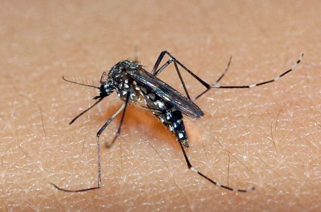

2012
Sancionada a Lei Complementar nº 141, encerrando uma longa batalha política de 11 anos para regulamentar sem distorções a divisão de receitas da EC nº 29 entre os entes federativos.
2013 - 2014
Criação do polêmico e urgente Programa Mais Médicos, visando suprir a severa escassez de profissionais médicos em municípios remotos do interior e nas periferias das metrópoles (2013). Articulação do movimento cívico "Saúde+10" por financiamento.
2015 - 2016

Fonte: Raul Santana.
Grave epidemia nacional do Zika Vírus. Em 2016, ocorre o processo de impeachment da presidente Dilma Rousseff. Paralelamente, a Proposta de Emenda à Constituição (PEC 86/2015) e o subsequente teto de gastos geraram um severo congelamento e processo de desinvestimento/debilitação crônica do orçamento do SUS.
Foto: Marcos Oliveira/Agência Senado (2016).
2017 - 2018 - Governo transitório de Michel Temer
• Pnab (revisão): Portaria n. 2.436 apresenta as novas diretrizes de atenção básica do SUS, com mudanças na administração dos recursos na esfera municipal, na forma de atuação dos agentes de saúde, bem como reconhece e financia outros modelos de AB, além da ESF.
• Portaria n. 3.992: altera as modalidades de transferência dos recursos federais e cria dois blocos para o repasse de recursos (custeio e investimentos).
2019 - 2020 - Governo Jair Bolsonaro
Criação do Programa Previne Brasil, que extingue os pisos fixo e variável (PAB), introduz o repasse dos recursos federais pelo número de pessoas cadastradas e estabelece nova forma de pagamento por desempenho.
Pandemia de Covid-19 (2020)
A relevância vital do SUS ficou escancarada globalmente. Sendo o único sistema público de saúde de proporções continentais, ele foi o pilar que permitiu coordenar a resposta de enfrentamento nacional, viabilizando testagens, rastreamento ativo, internações de alta complexidade e a gigantesca campanha de vacinação em massa.